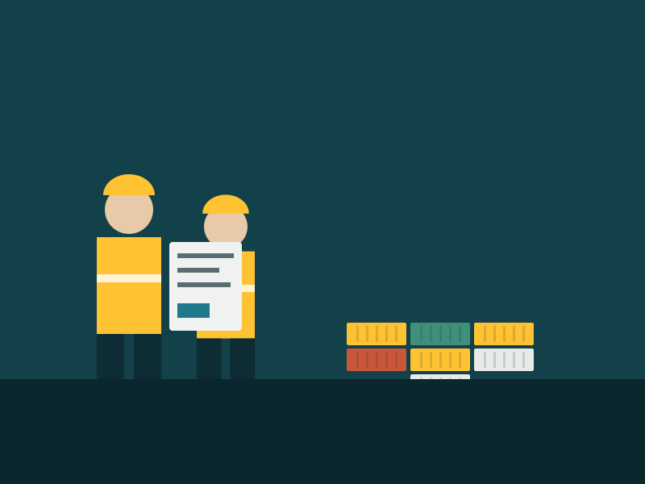

Tell you first
If a load is late we call before you notice. A surprise costs more than a delay.
Anchorline Logistics
Two trucks and a shed in 2016. Eleven depots and a national line-haul network today.
Who we are
Anchorline started when three dock workers at Port Botany got tired of telling customers they would have to ring someone else. The idea was simple: one operator for the whole journey, and a record the customer can read without asking permission.
Ten years on the trucks are newer and the network is bigger, but the test has not changed. If a customer cannot find out where their freight is in under a minute, we have not finished the job.

How we got here
What we hold ourselves to
If a load is late we call before you notice. A surprise costs more than a delay.
Every scan, temperature log and proof of delivery sits on the consignment, visible to you.
Fatigue managed rosters and chain of responsibility training for every driver and loader.
The operation today